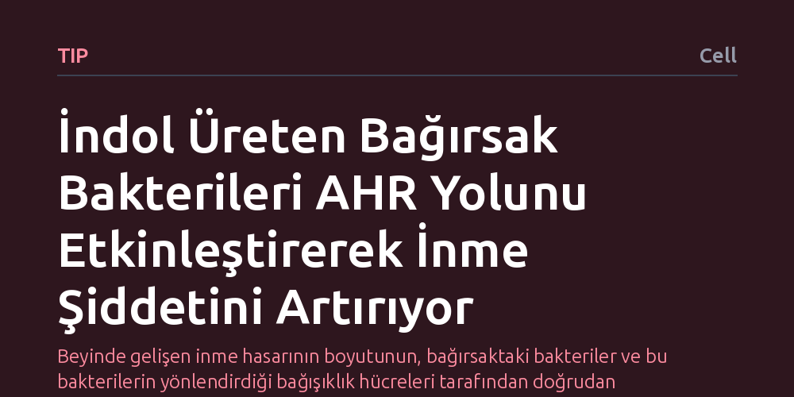

TIP · Cell · 2026-10-08
Araştırmacılar, bağırsak mikrobiyotasının iskemik inme şiddetini nasıl etkilediğini ve hangi bağışıklık mekanizmalarını tetiklediğini inceledi. İndol üreten koli basili bakterilerinin dendritik hücrelerde AHR sinyalini etkinleştirerek beyin hasarını artırdığı, bu sinyali baskılamanın ise beyin zarlarındaki koruyucu bağışıklık hücrelerini çoğaltarak iltihabı azalttığı saptandı.
Beyinde gelişen inme hasarının boyutunun, bağırsaktaki bakteriler ve bu bakterilerin yönlendirdiği bağışıklık hücreleri tarafından doğrudan belirlenebildiğini gösteriyor.

İskemik inme, beyne giden kan akışının aniden kesilmesiyle dokunun oksijensiz kalmasına yol açan ağır bir klinik durumdur. Damar tıkanıklığının hemen ardından başlayan hücre ölümü tablonun yalnızca ilk aşamasını oluşturur; asıl kalıcı yıkım, izleyen saatlerde ve günlerde bağışıklık sisteminin tetiklediği aşırı iltihaplanma yanıtıyla derinleşir. Bu nedenle araştırmacılar, bağışıklık yanıtının şiddetini hangi çevresel faktörlerin ve vücut içi sinyallerin belirlediğini uzun süredir anlamaya çalışıyor.
Son yıllarda yapılan keşifler, sindirim sisteminde yerleşik mikrop topluluklarının yalnızca bağırsak sağlığını değil, sinir sistemini ve bağışıklık dengesini de doğrudan etkilediğini ortaya koydu. Ancak bağırsak bakterilerinin beyindeki akut bir damar tıkanıklığına nasıl müdahil olduğu, hangi hücresel elçileri kullanarak hasarı ağırlaştırdığı ya da hafiflettiği bilinmiyordu. Bu çalışma, bağırsaktaki mikroorganizmalar ile beyin arasındaki bu gizli iletişim hattını aydınlatmayı amaçlıyor.
Bilim insanları bu bağlantıyı çözebilmek için deneysel iskemik inme modellerinde bağırsak florasını ve bağışıklık hücrelerinin hareketlerini inceledi. Özellikle indol üreten Escherichia coli bakterilerinin varlığı ile bu bakterilerin salgıladığı kimyasal maddelerin bağırsak duvarındaki dendritik hücreler üzerindeki etkileri takip edildi.
Deneylerde, hücrelerin çevresel kimyasalları tanımasını sağlayan aril hidrokarbon reseptörünün (AHR) işlevi mercek altına alındı. Dendritik hücrelerdeki AHR sinyal iletimi hedeflenerek sınırlandırıldı; bu müdahalenin ardından bağışıklık hücrelerinin bağırsak dokusundan beyin zarlarına (meninksler) göç edip etmediği ve beyin dokusundaki iltihap hücrelerinin dağılımı ölçüldü.
Elde edilen bulgular, indol üreten E. coli bakterilerinin dendritik hücrelerdeki AHR reseptörünü etkinleştirdiğinde iskemik inme hasarının belirgin biçimde ağırlaştığını gösterdi. Bakteriyel ürünlerle uyarılan AHR yolu, dendritik hücrelerin iltihap yanlısı bir kimliğe bürünmesine yol açarak beyindeki doku yıkımını hızlandırıyor.
Buna karşın dendritik hücrelerde AHR sinyali sınırlandırıldığında tablo tamamen tersine döndü. Bağırsak kökenli dendritik hücrelerin beyin zarlarına göç ettiği, burada iltihaplanmayı frenleyen düzenleyici T hücrelerinin (Treg) sayısını artırdığı ve beyindeki nöroinflamasyonu önemli ölçüde baskıladığı tespit edildi.
Bu mekanizmanın aydınlatılması, inme tedavisinde yalnızca beyin dokusuna müdahale etmek yerine bağırsak-bağışıklık eksenini hedefleyen yeni yaklaşımların geliştirilebileceğine işaret ediyor. Yazarların ifade ettiği gibi, "This microbiota-AHR axis offers a promising therapeutic target" ve bağırsaktaki mikrobiyal dengenin ya da AHR sinyal yolunun düzenlenmesi, inme sonrası gelişen ikincil nörolojik hasarı sınırlamak için yeni stratejiler sunabilir.
Bununla birlikte, çalışmanın henüz deneysel hayvan modelleri düzeyinde olduğunu ve doğrudan insan klinik tedavisi olarak yorumlanamayacağını akılda tutmak gerekir. İnsan mikrobiyotası çok daha karmaşık ve bireysel farklılıklar barındırdığından, bu biyolojik mekanizmanın insanlarda aynı koruyucu etkiyi sağlayıp sağlamayacağı gelecekteki klinik araştırmalarla netlik kazanacaktır.